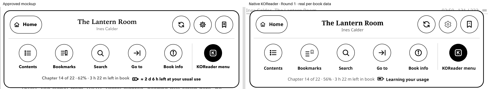
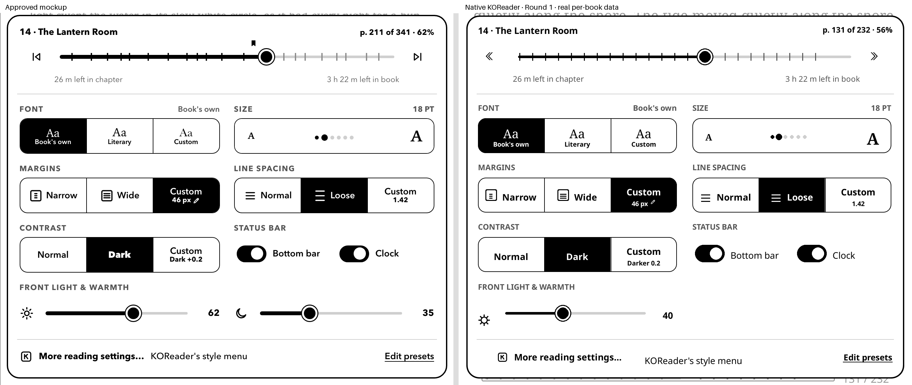
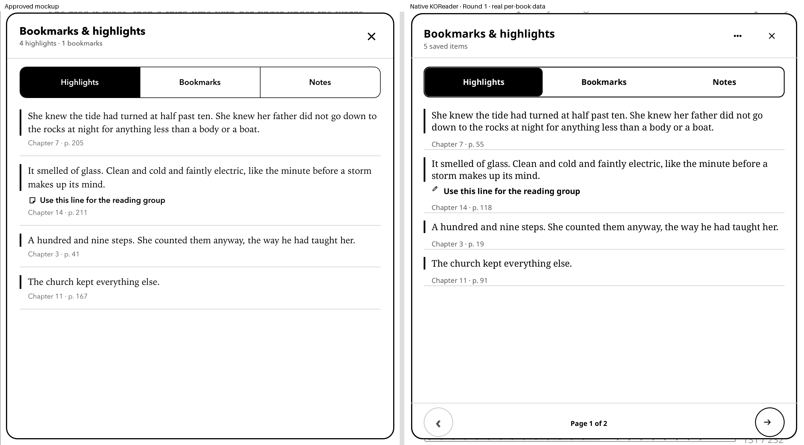
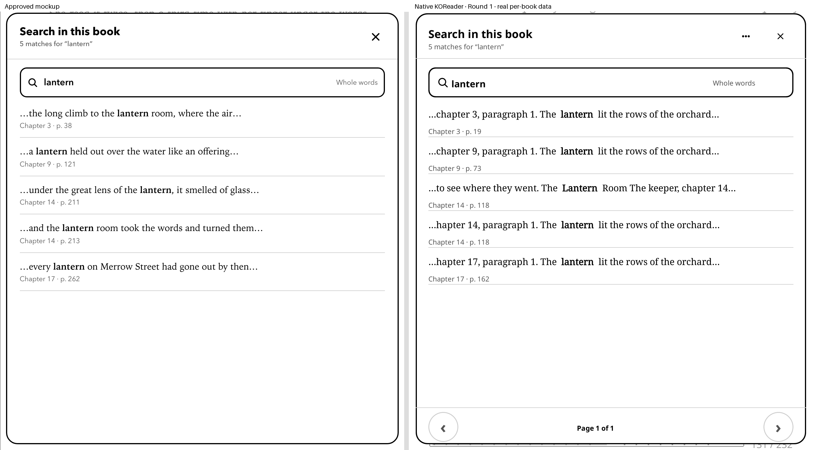
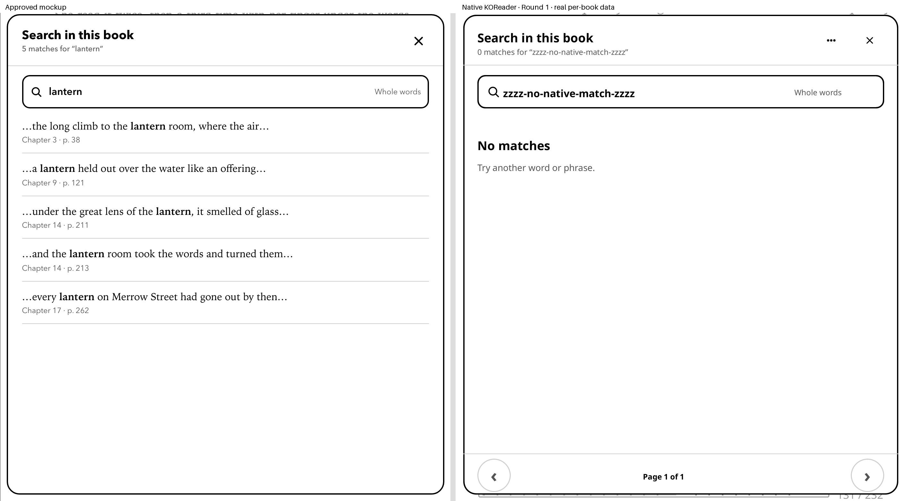
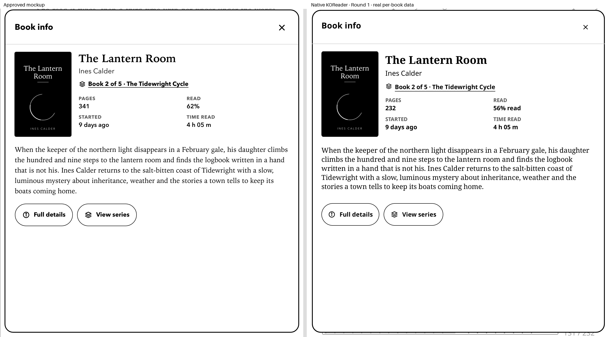
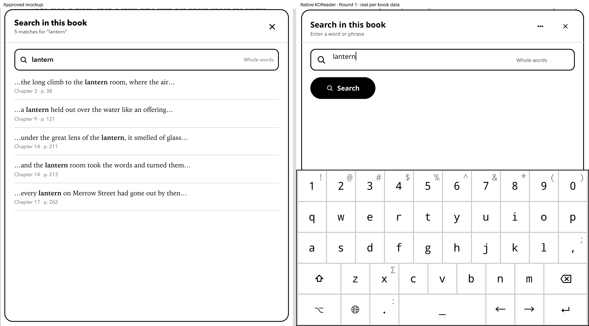

contents
Native cached reader data; synthetic narrative and pagination differ from the static mockup.

Approved crop left, native 1404×1872 / 300 dpi capture right. All Book info and pace fields come from the open EPUB and its own native statistics database. No display-model injections. Native font/icon metrics, synthetic narrative/pagination, native keyboard, bounded annotation paging and the generic emulator’s missing warmth driver remain different.
No sign-in text; compact learning label; measured book time from native per-book pace.

Actual worker pace: 26 m left in chapter / 3 h 22 m left in book. Generic emulator front light is supported; warmth driver is absent.

Native cached reader data; synthetic narrative and pagination differ from the static mockup.
Native cached reader data; synthetic narrative and pagination differ from the static mockup.

Native whole-word search, ellipsized match-centred context, chapter/page location and cap wording only when the 129th hit proves a cap.

Real whole-word zero-result state. Approved Search shell is the empty-state reference.

Actual open-document page count and EPUB dc:description; MD5-linked per-book Started and Time read; saved five-book series count. No model injection.

Native cached reader data; synthetic narrative and pagination differ from the static mockup.

Whole words toggles inside the field. The native keyboard remains for input methods.
